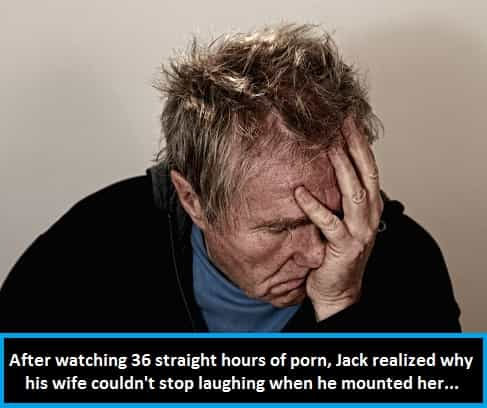
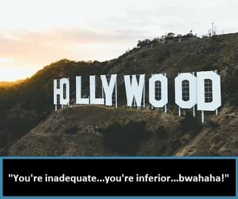

Bob Smith is a man in search of the truth. His favorite quotes are, "We're all fools on this earth, and I can be no different"; "I know it's true, I read it at the LIE-brary"; and "The truth is not misogynistic, it's just the truth".


You see it on your computer screen whenever you watch porn… it’s huge, it’s frightening, it’s absolutely unreal, and it makes you feel like your own equipment is the genital equivalent of sporting a sub-100 IQ. It’s the monster penis.
Well, as I’m about to flesh out for you here, that monster penis that you continually see in porn movies actually is, in many cases, absolutely unreal, because in many cases it’s a prosthetic.
The San Fernando Valley produces a massive number of porn films, and since it’s only a hop, skip and a short jump away from Hollywood, it isn’t a stretch for anyone to realize that the porn moguls have access to the best special effects, and makeup artists, that Hollywood has to offer. And Tinseltown’s best special-effects men and makeup artists can make an average-sized penis look like a porn star’s, as easily as you and I can cross the street while checking out three different girls’ asses and eating a sandwich.
In the 1997 film, “Boogie Nights”, actor Mark Wahlberg gave us a glimpse of the red-pill truth here when he unfurled his massive member at the very end of the movie. And in this case, the con artists in the San Fernando Valley were being outed, as Hollywood slipped the truth into the end of one of its mainstream films, knowing full well that very few people would get the gist of the joke.
Now, I’m no urologist, but that penis of Markie Mark’s looked big enough to gag a blue whale. And it looked real as hell, too – but it wasn’t. Wahlberg himself admitted he wore a prosthetic for the film’s final “money shot”…

A couple years ago I read an eye-opening interview, shortly after I first began to pull at this particular thread and dig for clues. That interview has since been scrubbed from the search engines, so far as I can tell, but in the interview, a porn industry insider admitted that many male porn actors wore some type of prosthetic. This was especially true of male porn actors who were black. A black man’s dark skin tones can more effectively hide the seams of the prosthesis, which are more readily apparent when contrasted against the skin tones of a lighter-skinned male.
The production companies also allegedly utilized optimum camera angles and special lenses (and in some cases, CGI – computer-generated imagery) that made men’s members look larger than they actually were. The insider being interviewed, who acted like he was afraid he was about to get whacked (which he probably was), also said that porn stars signed non-disclosure agreements about this issue. It was big-time, secret, hush-hush stuff.
After reading the entire article, and thinking about the whole thing for a while, it all began to make sense to me. So I started to dig for other clues, and where best to go looking for those clues, than in actual porn movies.
It didn’t take long to find some ridiculously obvious evidence. Right out of the gate, I spied a porn clip featuring a tiny white chick in the center of a giant sea of waving, humongous, impossibly long, black phalluses. And after I slowed the film down, I saw the smoking gun – an abnormal-looking penis in mid-thrust…
Even the best special effects men and makeup artists in the world can’t make all prosthetic penises look 100% real in porn movies. And in the cases I spotted, after I slowed a few films down, many of the members in question all had the same features—they tapered down in width at the midsection, whereupon, if you looked closely enough, you could clearly see the head of the actual penis, encased within the prosthetic sheath. And from that point on, the prosthetic widened abnormally and continued upward to well, you know… practically to infinity.
In addition, time after time, I spotted bendable erect penises, which would jut off at right or left angles at nearly 90 degrees, while the cowboy in the saddle pounded away with his fake rhythm stick. Now I don’t know about you, but if I bent mine at a 90-degree angle, while banging the crap out of some chick, it would not only hurt like hell and cause serious internal hemorrhaging, severely torn muscles, and massive nerve damage to boot.
Upon closer inspection, all of these cleverly altered, black penises looked like cardboard tubes, the kind you find at the core of a roll of gift-wrapping paper, which had gotten flattened out in the middle and coated with skin-tone-matching paint, and the 90-degree angle of the dodgy dongs was clearly evident when the humping started approaching warp speed…
I emailed some screen-captured images from a few of these films, to a friend of mine who’s an acclaimed artist; he specializes in human portraits. He’s also a world-class photographer and he can spot a phony paste-up photo or an out-of-proportion body part from a mile away.
He emailed me back a couple of days after I’d sent him the screen caps along with my hypothesis, which was that most of the extremely large penises that we see in today’s porn movies were phonier than a hypergamous hottie’s breasts.
“Bob of course most monster penises are fake,” he wrote back a bit wearily. “The screen shots you sent me there is no doubt about those. But you can tell that most of these are fake if you know what to look for no matter what precise type of fakery might be in play. Most of them are very long and the width doesn’t match the length. They are not proportional.
“Have you ever seen a man’s arm that is really long and really slender like those aliens you see in science fiction movies – no. How about a man’s leg – no. His neck – no. For the male unit to work right and to support itself for a full-on erection (I was really glad he kept putting these italicized words in for me, to emphasize my own denseness – author’s note) it has to be symmetrical. Most of the extremely large penises you see in porn are not symmetrical.
“Sure there are aberrations and there are some very large penises but real penises just don’t look like that. I mean if you saw them in a flaccid state and they were really that large they would look like long strands of thick spaghetti and they would hang over halfway down to the guy’s knee. A man’s penis is at its longest before it gets fully erect, it is longer when semi-erect and stretched. So yes there is no doubt about it most extremely large penises you see in porn movies are just fake prosthetics.”
Now, why would the porn moguls want to do things this way. Well, I can think of one main reason – for purposes of psychological warfare.
The uber-rich own everything, porn-production companies included. And we already know they use mainstream Hollywood films to fuck with your head. And if they can get inside your head, and make you feel bad about yourself, while you watch porn movies, they win again. Doesn’t matter what the battlefront is, they are in it to win it. They do it all the time in today’s SJW Hollywood films. Why not in porn?
If most men believed that their equipment was substandard, well, that would definitely have a negative psychological effect on them and white men in particular, who always seem to come out second-best in today’s porn films. And come to think of it, this would mess up the average black man’s head, too, because the average black man isn’t packing anything close to what the black porn actors appear to be packing.
With the average erect penis measuring in at exactly 13.21 centimeters (5.2 inches), according to what many scientists refer to as the most exacting study ever conducted on the subject (mostly due to the fact that many penis-size studies undertaken over the years, which were considered to be “accurate”, were conducted by men who self-reported their own sizes, and, well… enough said about that), this would mean that any guy seven inches in length is still going to feel like Lil’ Wally Wiggly Worm in the face of those monster porn penises he sees online, even though at seven inches (17.78 cm), according to the aforementioned study, his equipment puts him in the top 1% of all men on the planet. (Score one for the elitists.)
And what about women? How might this affect the average female?
Well, women are visual creatures, too. If they see it, they start wanting it. And this is especially true if their female friends constantly proclaim their ardent desire for it. And, of course, all women brag about the big penises they’ve had, to which they undoubtedly add three or four inches while describing the length. I’m suddenly reminded of this stripper I knew a few years ago, whom I rejected several times; she once spat at me, quite venomously, and with vindictive spite, “My boyfriend has a nine-inch dick and it’s pierced.”
So women go looking for those gigantic porn phalluses out in the real word, because most young females today are raised on Internet porn as well as the Bunyanesque tales regarding massive penis sizes, told to them by their exaggerating girlfriends, and then they can’t find them. So they feel like they are not getting the very biggest and the very best that the world has to offer, and consequently, they feel unsatisfied.
They also feel inadequate, after being bombarded with images of the near-perfect assets of female porn stars, celebrities and models. Add it all up and it’s a devastating blow to male and female psyches alike…
So now we come to the myth of the female squirter. Do some women really possess the ability to produce mass-quantities of female ejaculate when they orgasm?
A few years back, an online acquaintance of mine sent me a video that she had taken of herself in the bathtub. She sucked water into her vagina, and power-squirted it out, about eight feet into the air, and all the way across the bathroom. It was stunning. This chick had muscles that were so on point, she could basically mold clay figurines with them, or maybe choke out an anaconda.
Could this be the secret of the super-squirting females, who were becoming so ubiquitous in porn movies? Or could something else, such as forcibly expelled urine, be the secret here? To find the proof, I didn’t have to dig very far into my favorite search engine.
Porn star Veronica Avluv, who is known as a super-squirter in the industry, spilled part of the beans during an interview, which you can read right here (scroll down, fourth exchange from the bottom of page), regarding the methodology employed during her mega-squirting scenes.
In the interview, Avluv admits that she “drinks a lot of water.” And she also claims that her ejaculatory fluid “comes out of the same hole” (meaning out of her urethra), and is “odorless and colorless”. But she insists that it’s not urine. (Hold that thought, because we’re going to come back to it in a minute.)
Cosmopolitan magazine once did an interview with a porn star named Tara Lynn Fox, in which she claimed that the type of squirting featured in her own porn movies was accomplished by inserting large amounts of water directly into her vagina before the scene. (You can read that Cosmo article in its entirety right here; forcibly expelled urine is also discussed in this article, as a standard means of female squirting.)
So it’s starting to look as if there are two major ways that the porn industry fakes its “squirting scenes”…
In an article found at the website, The Sex MD, which you can read right here, the author claims that the geyser-like liquid expelled during “normal” female squirting (whatever the hell that is), is typically urine-based: “Women who experience squirting are simply learning to release one set of muscles while contracting the bladder so they can release urine.” (And this is very similar to the explanation given in a portion of that Cosmo article, if you happened to read the whole thing.)
In addition, porn actor/director Seymore Butts openly discussed in an interview for Men’s Health, how women either urinate when shooting the squirting scenes for the films he directs, or their vaginas are filled with water using a turkey baster, of all things.
And now for the kicker: according to Wikipedia, “Female placental mammals use their urethra only for urinating, but male placental mammals use their urethra for both urination and ejaculation. The external urethral sphincter is a striated muscle that allows voluntary control over urination.”
So unless porn star Veronica Avluv has some sort of secondary, liquid-blasting pipe that is somehow connected to her urethra in a physiologically mystifying way, it’s fair to assume that she might be just a little bit off-base with her somewhat dubious assertions.
As the above evidence clearly points out, women simply do not possess anything within their bodies which would account for the voluminous displays of liquid that are blasted out of vaginas in today’s porn movies (other than urine or copious injections of pre-squirt-scene water). So once again, what purpose might all of this serve?
For starters, it adds yet one more item to the huge list of inadequacies perceived about themselves by females. If a woman sees a mega-squirter in a porn movie, and she thinks it’s on the level, she feels like she is inadequate, she feels substandard.
Since studies have shown that only about 25% of women can actually orgasm while having sexual intercourse, this makes them feel even less adequate than they already feel.
And on whom, exactly, are they going to take out that frustration? That would be us. That would be men. Psychological warfare.
Likewise, if some unsuspecting male thinks squirting is on the level, it makes him feel like he’s not up to the mark, if he can’t make his women shoot a Super-Soaker blast out of her honey pot, and completely lather the opposite wall, directly across from the bed, at the local Motel 6. (Score another point for the elitists.)

It’s wise to watch those porn movies with a grain of salt, young squires. Hollywood is indeed the land of magic, the land of smoke and mirrors, and it’s just down the street from Porn Central, the San Fernando Valley.
And they both utilize interchangeable parts.
And what you are seeing, in any film that emanates from Tinseltown or its affiliated neighborhoods, is usually not what you are actually getting.
Especially when it comes to porn films.
Read Next: The Psychological Sexual Desensitization Of The Modern Man
{kind=link}
{kind=link}